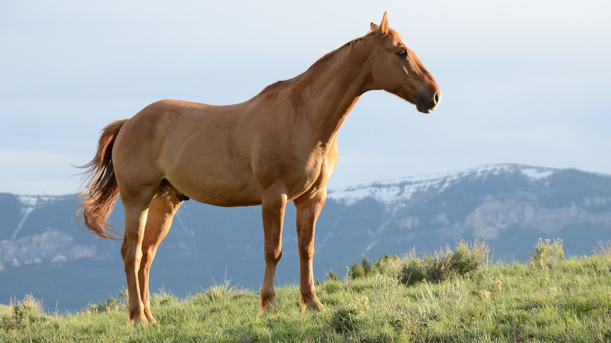
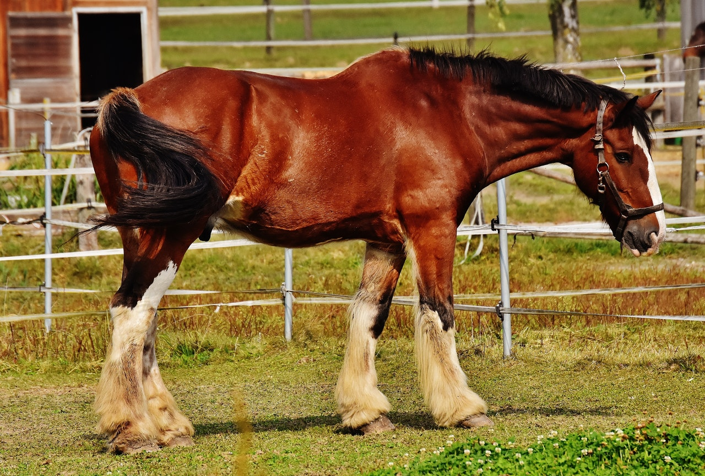

Generell beskrivelse

Hest er i dag en temmet dyreart, og er i liket med hunden preget av avl.
Hesten var i lang tid etter at den ble temmet for 6-7 tusen år siden brukt som transportmiddel eller andre nytteoppgaver.
I løpet av de siste hundre årene har hesten blitt mindre nyttig innen jord- og skogbruk. Dette har ført til noe reduksjon i hestebestanden.
Bruk av hest innen idretts- og fritidsaktiviteter gjør at hesten likevel er å regne som et populært dyr.
Hingsten Karl

8/10
Definisjon på "hingst" ifølge wikipedia er "en ukastrert hannhest".
Jeg må si at jeg er delvis skuffet over mangelen på maskulinitet og hvor simplistisk denne beskrivelsen er.
Hingsten Karl har og kommer aldri til ha like mye kraft som en "Stallion" har, men ble man omtalt som en hingst i sjeldne sosiale sammenhenger så var det et tegn på høy grad av testosteron eller generell maskulinitet, håper jeg.
Tilbake til Karl i bildet vil jeg dra inn en egen definisjon av "hingst".
Karl er en maskulin hannhest som viser høy kvalitet, god form og virker totalt overlegen til verden rundt. Mens dette ikke blir sett på som en reell definisjon på noen måte, helt ærlig etter å ha lest over igjen virker den mindre enn tilstrekkelig for situasjonen, men jeg prøver fortsatt å komme frem til et poeng. Uansett så passer Karl inn i definisjonen tidligere beskrevet.
Noen vil kanskje påstå at definisjonen er basert på akkurat den hesten, det kan jeg dessverre ikke bekrefte eller avkrefte på dette stadiet.
Karl poserer vakkert med horisonten som automatisk gir bonus poeng. Han holder god form, musklene buler ut og selv om fjeset er selve definisjonen på uttrykket "lang i maska" så klarer han fortsatt å uttrykke sin indre følelse av overlegenhet.
Totalt er Karl et solid dyr.